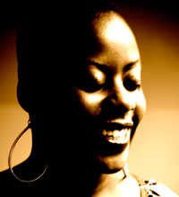

past performanceQuiet Frenzy Written and Performed by Stacey Karen Robinson |
synopsis:Quiet Frenzy is a solo show about grief and awakening. After a family tragedy, LaShonda falls apart and comes together in a fractured symphony of remembrance and rebirth, loss and laughter. review:Stacey Robinson is an otherwordly talent. The experience of her performance work and her writing has indelibly changed me as a human being. You've heard the expression 'the emperor has no clothes...' Well - this empress is DECKED OUT in garments made of earth wind fire and water and her jewels are the stars in the night sky. STACEY IS FOR REAL and IS BRINGING IT. This is a rare opportunity to see what in my opinion is greatness embodied. GET HERE!!! |
showtimes:Fri. August 6th, 2010 @ 8PM tickets:Ticket sales are closed. |
upcoming performances |
|||
 |
|||
| EVQ Film Festival 2018 August 20-25 |
|||
performance archives |
|||
| 2018 | 2017 | 2016 | 2015 |
| 2014 | 2013 | 2012 | 2011 |
| 2010 | 2009 | 2008 | 2007 |